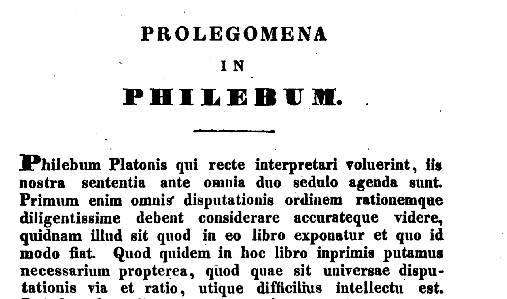

setwd("/Users/olga/R_Workflow/Text_Analysis_2024")
# искать в текущей директории
setwd("./Text_Analysis_2023")
# перейти на уровень вверх
setwd("../")5 Импорт и экспорт данных
5.1 Работа с табличными данными
Любой анализ данных начинается с импорта данных. Прежде чем что-то делать, проверьте свою рабочую директорию при помощи getwd(). Для смены можно использовать как абсолютный, так и относительный путь:
Основная функция для скачивания файлов из Сети – download.file(), которой необходимо задать в качестве аргументов url, название сохраняемого файла, иногда также метод.
Попробуем скачать датасет из Репозитория открытых данных по русской литературе и фольклору под названием “Байрон в русских переводах 1810–1860-х годов”.
url <- "https://dataverse.pushdom.ru/api/access/datafile/:persistentId?persistentId=doi:10.5072/openlit-2019.11-R002/VQRXXK"
# если url начинается с https, на Mac _может_ потребоваться указать method = "curl"
download.file(url, destfile = "../files/Byron.tab") После этого в папке files появится новый файл. Получить список скачанных файлов можно при помощи list.files().
list.files("../files", pattern = "\\.tab")[1] "Byron.tab"5.2 Чтение табличных данных
Основные функции для чтения табличных данных в базовом R - это read.table() и read.csv().
5.2.1 csv и tsv
Файл, который мы скачали, имеет расширение .tab. Такие файлы по структуре аналогичны файлам .tsv (tab separated values). Чтобы его прочитать, используем read.table(), указав тип разделителя:
Byron <- read.table("../files/Byron.tab", sep = "\t", header = TRUE)
head(Byron[,5])[1] "б.п." "б.п., с пометой: Варшава"
[3] "К. П. Б." "И. Козлов"
[5] "К." "NN" Функция read.csv() отличается лишь тем, что автоматически выставляет значения аргументов sep = ",", header = TRUE.
В диалекте tidyverse для импорта подобных файлов используется функция read_csv из пакета readr1.
Вернемся к нашему датасету про буккроссинг, файлы которого имеют расширение csv. К сожалению, это не всегда гарантия того, что перед вами действительно csv:
library(readr)
users <- read_csv("../files/BX/BX-Users.csv", show_col_types = FALSE)
head(users)Чтобы исправить дело, воспользуемся другой функцией из того же пакета:
users <- read_delim("../files/BX/BX-Users.csv", delim = ";", show_col_types = FALSE)
usersОчевидно, это не решает всех проблем, но как справиться с оставшимися, мы рассказывали в уроке об опрятных данных.
5.2.2 xls и xlsx
Не самый любимый аналитиками, но очень распространенный тип файлов. Чтобы с ним работать, нужно установить пакет readxl из семейства tidyverse2. Это не единственный пакет для работы с Excel, но, пожалуй, самый удобный. Файл с самыми популярными на Amazon книгами можно взять здесь.
library(readxl)
amazon <- read_excel("../files/AmazonBooks.xlsx")
head(amazon)Можно указать отдельные листы, которые необходимо прочитать.3
5.3 Чтение текстовых данных
5.3.1 txt
Для чтения текстовых файлов в базовом R есть функция readlines(). Аргумент n указывает, сколько строк прочитать; при n = 1 функция дойдет до первого переноса строки или параграфа.
readLines(con = "../files/karamzin_liza.txt", n = 1) [1] " Может быть, никто из живущих в Москве не знает так хорошо окрестностей города сего, как я, потому что никто чаще моего не бывает в поле, никто более моего не бродит пешком, без плана, без цели -- куда глаза глядят -- по лугам и рощам, по холмам и равнинам. Всякое лето нахожу новые приятные места или в старых новые красоты. Но всего приятнее для меня то место, на котором возвышаются мрачные, готические башни Си...нова монастыря. Стоя на сей горе, видишь на правой стороне почти всю Москву, сию ужасную громаду домов и церквей, которая представляется глазам в образе величественного амфитеатра: великолепная картина, особливо когда светит на нее солнце, когда вечерние лучи его пылают на бесчисленных златых куполах, на бесчисленных крестах, к небу возносящихся! Внизу расстилаются тучные, густо-зеленые цветущие луга, а за ними, по желтым пескам, течет светлая река, волнуемая легкими веслами рыбачьих лодок или шумящая под рулем грузных стругов, которые плывут от плодоноснейших стран Российской империи и наделяют алчную Москву хлебом. "5.3.2 doc
Если есть возможность конвертировать документ Word в простой текстовый формат, то лучше так и сделать. Если нет, то устанавливаем пакет officer.
library(officer)
files <- list.files(path = "../files", pattern = "docx")
# read file
doc <- read_docx(paste0("../files/", files[1]))
content <- docx_summary(doc)
head(content) # весь текст доступен в столбце textТаким образом, однако, мы теряем все сноски. Следующий код позволяет их достать:
library(xml2)
xml_text(xml_find_all(doc$footnotes$get(), "*"))Тут уже применяются функции для работы с xml. Поэтому лишний раз подумайте, не проще ли конвертировать документ Word в .txt.
5.3.3 pdf
С pdf тоже без нужды лучше не иметь дела. Но если все-таки пришлось читать pdf, для этого есть пакет pdftools4.
library(pdftools)
# длинющий вектор, который придется очищать от \n (новая строка)
liza <- pdf_text(pdf = "../files/karamzin_liza.pdf")
# метаданные в виде списка
meta <- pdf_info(pdf = "../files/karamzin_liza.pdf")
meta$created[1] "2023-07-16 19:36:09 MSK"Разработчики утверждают, что пакет справится и с распознаванием текста, но для этого должен быть установлен пакет tesseract.
install.packages("tesseract")Возможно, сначала вам придется установить нужные языки. Код ниже вы можете попробовать выполнить самостоятельно, указав актуальный путь до файла.
library(tesseract)
tesseract_download("deu")
text <- pdf_ocr_text("../files/German.pdf", language = "deu")
cat(text)5.3.4 png
Тот же фокус сработает и с изображениями. Но точность распознавания сильно зависит от качества картинки.
# tesseract_download("lat")
lat <- tesseract::tesseract("lat")
text <- tesseract::ocr("./images/latin.png", engine = lat)
cat(text)
5.4 Архивы
5.4.1 zip
Для работы с архивами есть функция unzip(). Полезно помнить, что большой архив не обязательно распечатывать полностью. Если выставить аргумент list = TRUE, то функция вернет список всех файлов в архиве, из которых можно прочитать в память лишь избранные:
archive <- unzip("../files/BX.zip", files = NULL, list = TRUE)
archiveКод ниже позволяет извлечь из архива только нужный файл:
unzip("files/archive.zip", files = "BX_Books.csv")После этого файл можно прочитать в R, как указано выше.
5.5 Структурированные данные
5.5.1 json
Формат JSON (JavaScript Object Notation) предназначен для представления структурированных данных. JSON имеет шесть основных типов данных5. Четыре из них - скаляры6:
- Самый простой тип -
null(нуль), который играет ту же роль, что иNAв R. Он представляет собой отсутствие данных. - Строка (string) похожа на строку в R, но в ней всегда должны использоваться двойные кавычки.
- Число аналогично числам в R; поддерживается целочисленная (например, 123), десятичная (например, 123.45) или научная (например, 1,23e3) нотация. JSON не поддерживает
Inf,-InfилиNaN. - Логическое значение аналогично
TRUEиFALSEв R, но использует строчные буквыtrueиfalse.
Строки, числа и булевы значения в JSON очень похожи на символьные, числовые и логические векторы в R. Основное отличие заключается в том, что скаляры JSON могут представлять только одно значение. Для представления нескольких значений необходимо использовать один из двух оставшихся типов: массивы и объекты.
И массивы, и объекты похожи на списки в R, разница заключается в том, именованы они или нет. Массив подобен безымянному списку и записывается через []. Например, [1, 2, 3] - это массив, содержащий 3 числа, а [null, 1, "string", false] - массив, содержащий ноль, число, строку и булево значение.
Объект подобен именованному списку и записывается через {}. Имена (ключи в терминологии JSON) являются строками, поэтому должны быть заключены в кавычки. Например, {“x”: 1, “y”: 2} - это объект, который сопоставляет x с 1, а y – с 2.
Загрузим небольшой файл TBBT.json, хранящий данные о сериале “Теория большого взрыва” (источник). Скачать лучше из репозитория курса ссылка.
library(jsonlite)
path <- "../files/TBBT.json"
tbbt <- fromJSON(txt = path,
simplifyVector = T)Функция fromJSON() вернет нам список, который мы выборочно преобразуем в тиббл:
library(tidyverse)
cast_tbl <- tbbt$casting %>%
transpose() %>%
map(as.character) %>%
as_tibble()
cast_tblПроделаем то же самое для списка эпизодов, но немного другим способом.
episodes_tbl <- tibble(
episode_id = map_chr(tbbt$episode_list, pluck, "episode_id"),
title = map_chr(tbbt$episode_list, pluck, "title"))
episodes_tbl
5.5.2 xml
XML (от англ. eXtensible Markup Language) — расширяемый язык разметки. Слово “расширяемый” означает, что список тегов не зафиксирован раз и навсегда: пользователи могут вводить свои собственные теги и создавать так называемые настраиваемые языки разметки (Холзнер 2004, 29). Один из таких настраиваемых языков – это TEI (Text Encoding Initiative), о котором будет сказано дальше.
Назначение языков разметки заключается в описании структурированных документов. Структура документа представляется в виде набора вложенных в друг друга элементов (дерева XML). У элементов есть открывающие и закрывающие теги.
Все составляющие части документа обобщаются в пролог и корневой элемент. Корневой элемент — обязательная часть документа, в которую вложены все остальные элементы. Пролог может включать объявления, инструкции обработки, комментарии.
В правильно сформированном XML открывающий и закрывающий тег вложенного элемента всегда находятся внутри одного родительского элемента.
Создадим простой XML из строки. Сначала идет инструкция по обработке XML (со знаком вопроса), за ней следует объявление типа документа (с восклицательным знаком) и открывающий тег корневого элемента. В этот корневой элемент вложены все остальные элементы.
string_xml <- '<?xml version="1.0" encoding="utf-8"?>
<!DOCTYPE recipe>
<recipe name="хлеб" preptime="5min" cooktime="180min">
<title>
Простой хлеб
</title>
<composition>
<ingredient amount="3" unit="стакан">Мука</ingredient>
<ingredient amount="0.25" unit="грамм">Дрожжи</ingredient>
<ingredient amount="1.5" unit="стакан">Тёплая вода</ingredient>
</composition>
<instructions>
<step>
Смешать все ингредиенты и тщательно замесить.
</step>
<step>
Закрыть тканью и оставить на один час в тёплом помещении.
</step>
<step>
Замесить ещё раз, положить на противень и поставить в духовку.
</step>
</instructions>
</recipe>'Для работы с xml понадобится установить одноименную библиотеку. Функция xmlTreeParse() создаст R-структуру, представляющую дерево XML.
library(XML)
doc <- xmlTreeParse(string_xml)
class(doc)[1] "XMLDocument" "XMLAbstractDocument"Функция xmlRoot позволяет извлечь корневой элемент вместе со всеми детьми.
rootnode <- xmlRoot(doc)
rootnode<recipe name="хлеб" preptime="5min" cooktime="180min">
<title>Простой хлеб</title>
<composition>
<ingredient amount="3" unit="стакан">Мука</ingredient>
<ingredient amount="0.25" unit="грамм">Дрожжи</ingredient>
<ingredient amount="1.5" unit="стакан">Тёплая вода</ingredient>
</composition>
<instructions>
<step>Смешать все ингредиенты и тщательно замесить.</step>
<step>Закрыть тканью и оставить на один час в тёплом помещении.</step>
<step>Замесить ещё раз, положить на противень и поставить в духовку.</step>
</instructions>
</recipe>Если документ большой, бывает удобнее не распечатывать все дерево, а вывести имена дочерних элементов.
names(xmlChildren(rootnode))[1] "title" "composition" "instructions"Размер узла – это число вложенных в него “детей”. Его можно узнать, применив к узлу функцию xmlSize() – или подсчитав число “детей”.
xmlSize(rootnode) == length(xmlChildren(rootnode))[1] TRUEРаботать с xml можно как с обычным списком, то есть индексировать узлы по имени или по номеру элемента при помощи квадратных скобок. Так мы достаем узел по имени:
rootnode[["composition"]]<composition>
<ingredient amount="3" unit="стакан">Мука</ingredient>
<ingredient amount="0.25" unit="грамм">Дрожжи</ingredient>
<ingredient amount="1.5" unit="стакан">Тёплая вода</ingredient>
</composition>А так – по индексу:
rootnode[[2]]<composition>
<ingredient amount="3" unit="стакан">Мука</ingredient>
<ingredient amount="0.25" unit="грамм">Дрожжи</ingredient>
<ingredient amount="1.5" unit="стакан">Тёплая вода</ingredient>
</composition>Как и с обычными списками, мы можем использовать последовательности квадратных скобок:
ingr_node <- rootnode[[2]][["ingredient"]]
ingr_node<ingredient amount="3" unit="стакан">Мука</ingredient>Но обычно нам нужен не элемент как таковой, а его содержание (значение). Чтобы добраться до него, используем функцию xmlValue():
xmlValue(ingr_node)[1] "Мука"Можно уточнить атрибуты узла при помощи xmlAttrs():
xmlAttrs(ingr_node) amount unit
"3" "стакан" Чтобы извлечь значение атрибута, используем функцию xmlGetAttr(). Первым аргументом функции передаем xml-узел, вторым – имя атрибута.
xmlGetAttr(ingr_node, "unit")[1] "стакан"Как насчет того, чтобы применить функцию к набору узлов – например, ко всем инредиентам? Вспоминаем функции для работы со списками – sapply() из базового R или map() из пакета purrr:
ingr_nodes <- xmlChildren(rootnode[[2]])
sapply(ingr_nodes, xmlValue) ingredient ingredient ingredient
"Мука" "Дрожжи" "Тёплая вода" sapply(ingr_nodes, xmlGetAttr, "unit")ingredient ingredient ingredient
"стакан" "грамм" "стакан" Добраться до узлов определенного уровня можно также при помощи синтаксиса XPath. XPath – это язык запросов к элементам XML-документа. С его помощью можно описать “путь” до нужного узла: абсолютный (начиная с корневого элемента) или относительный. В пакете XML синтаксис XPath поддерживает функция getNodeSet().
# абсолютный путь
ingr_nodes <- getNodeSet(rootnode, "/recipe//composition//ingredient")
ingr_nodes[[1]]
<ingredient amount="3" unit="стакан">Мука</ingredient>
[[2]]
<ingredient amount="0.25" unit="грамм">Дрожжи</ingredient>
[[3]]
<ingredient amount="1.5" unit="стакан">Тёплая вода</ingredient># относительный путь
ingr_nodes <- getNodeSet(rootnode, "//composition//ingredient")
ingr_nodes[[1]]
<ingredient amount="3" unit="стакан">Мука</ingredient>
[[2]]
<ingredient amount="0.25" unit="грамм">Дрожжи</ingredient>
[[3]]
<ingredient amount="1.5" unit="стакан">Тёплая вода</ingredient>Синтаксис XPath позволяет отбирать узлы с определенными атрибутами. Допустим, нам нужны только те узлы, где значение атрибута unit = “стакан”:
getNodeSet(rootnode, "//composition//ingredient[@unit='стакан']")[[1]]
<ingredient amount="3" unit="стакан">Мука</ingredient>
[[2]]
<ingredient amount="1.5" unit="стакан">Тёплая вода</ingredient>При работе с xml в большинстве случаев наша задача – извлечь значения определеннных узлов или их атрибутов и сохранить их в прямоугольном формате.
В нашем простом примере это можно сделать несколькими способами. Первый: просто связать воедино несколько векторов.
title <- xmlValue(rootnode[["title"]])
ingredients <- map_chr(xmlChildren(rootnode[["composition"]]), xmlValue)
unit <- map_chr(xmlChildren(rootnode[["composition"]]), xmlGetAttr, "unit")
amount <- map_chr(xmlChildren(rootnode[["composition"]]), xmlGetAttr, "amount")
tibble(title, ingredients, unit, amount)В некоторых случаях бывает удобно также воспользоваться функциями из пакета xml2 в сочетании с функциями семейства unnest_ из tidyr.
library(xml2)
doc <- as_list(read_xml(string_xml))
# попробуем достать атрибуты
doc %>%
as_tibble() %>%
unnest_longer(recipe) %>%
filter(recipe_id == "ingredient") %>%
mutate(unit = map_chr(recipe, attr, "unit")) %>%
mutate(amount = map_chr(recipe, attr, "amount")) %>%
select(-recipe_id) %>%
unnest_longer(recipe)5.5.3 tei
Большая часть размеченных литературных корпусов хранится именно в формате XML. Это очень удобно, и вот почему: документы в формате XML, как и документы в формате HTML, содержат данные, заключенные в теги, но если в формате HTML теги определяют оформление данных, то в формате XML теги нередко определяют структуру и смысл данных. С их помощью мы можем достать из документа именно то, что нам интересно: определенную главу, речи конкретных персонажей, слова на иностранных языках и т.п.
Добавлять и удалять разметку может любой пользователь в редакторе XML кода или даже в простом текстовом редакторе. При этом в качестве универсального языка разметки в гуманитарных дисциплинах используется язык TEI (Скоринкин 2016). Корневой элемент в документах TEI называется TEI, внутри него располагается элемент teiHeader с метаинформацией о документе и элемент text. Последний содержит текст документа с элементами, определяющими его структурное членение.
<TEI>
<teiHeader></teiHeader>
<text></text>
</TEI>Пример оформления документа можно посмотреть по ссылке.
У teiHeader есть четыре главных дочерних элемента:
- fileDesc (описание документа c библиографической информацией)
- encodingDesc (описание способа кодирование первоисточника)
- profileDesc (“досье” на текст, например отправитель и получатель для писем, жанр, используемые языки, обстоятельства создания, место написания и т.п.)
- revisionDesc (история изменений документа)
В самом тексте язык TEI дает возможность представлять разные варианты (авторские, редакторские, корректорские и др.) Основным средством параллельного представления является элемент choice. Например, в тексте Лукреция вы можете увидеть такое:
sic calor atque <choice><reg>aer</reg><orig>aër</orig></choice> et venti caeca potestasЗдесь reg указывает на нормализованное написание, а orig – на оригинальное.
В качестве примера загрузим датасет “Пушкинского дома”, подготовленный Д.А. Скоринкиным: “Персонажи «Войны и мира» Л. Н. Толстого: вхождения в тексте, прямая речь и семантические роли”.
filename = "../files/War_and_Peace.xml"
doc <- xmlTreeParse(filename, useInternalNodes = T)
rootnode <- xmlRoot(doc)Теперь можно внимательнее взглянуть на структуру xml. Корневой элемент расходится на две ветви. Полностью они нам пока не нужны, узнаем только имена:
names(xmlChildren(rootnode)) [1] "teiHeader" "text" Очевидно, что что-то для нас интересное будет спрятано в ветке text, глядим на нее:
names(xmlChildren(rootnode[["text"]])) [1] "div" "div" "div" "div" "div"Итак, текст делится на какие-то пять частей. Функция xmlGetAttr() позволяет узнать значение атрибута type: как выясняется, это четыре тома и эпилог.
# это список
divs <- rootnode[["text"]]["div"]
sapply(divs, xmlGetAttr, "type") div div div div div
"volume" "volume" "volume" "volume" "epilogue" Как мы уже знаем, добраться до определенного узла можно не только путем индексирования, но и – гораздо удобнее – при помощи синтаксиса XPath. Для этого просто указываем путь до узла. Попробуем спуститься на два уровня ниже: там тоже будет тег div, но с другим атрибутом. Как легко убедиться, теперь это главы, всего их 358.
divs <- getNodeSet(doc, "/tei:TEI//tei:text//tei:div//tei:div//tei:div",
namespaces = c(tei = "http://www.tei-c.org/ns/1.0"))
length(divs)[1] 358unique(sapply(divs, xmlGetAttr, "type"))[1] "chapter"Обратите внимание, что в данном случае надо прямо прописать пространство имен (namespaces). Это можно посмотреть в самом xml, а можно воспользоваться специальной функцией:
xmlNamespace(rootnode)[1] "http://www.tei-c.org/ns/1.0"
attr(,"class")
[1] "XMLNamespace"Забрать конкретную главу можно путем индексации, но лучше – по значению соответствующего атрибута.
idx <- which(map(divs, xmlGetAttr, "xml:id") == "chapter1part1Volume1")
ch1 <- divs[[idx]]Чтобы извлечь текст, понадобится функция xmlValue.
chapter_1 <- xmlValue(ch1)Распечатывать весь текст первой главы не будем (это очень длинный вектор); разобъем текст на параграфы и выведем первый и последний:
library(stringr)
chapter_lines <- str_split(chapter_1, pattern = "\n")
chapter_lines[[1]][[5]][1] " — Eh bien, mon prince. Gênes et Lueques ne sont plus que des apanages, des поместья, de la famille Buonaparte. Non, je vous préviens que si vous ne me dites pas que nous avons la guerre, si vous vous permettez encore de pallier toutes les infamies, toutes les atrocités de cet Antichrist (ma parole, j'y crois) — je ne vous connais plus, vous n'êtes plus mon ami, vous n'êtes plus мой верный раб, comme vous dites. Ну, здравствуйте, здравствуйте. Je vois que je vous fais peur, садитесь и рассказывайте."chapter_lines[[1]][[838]][1] " Ce sera dans votre famille que je ferai mon apprentissage de vieille fille."Первая и последняя реплика по-французски: все правильно!
Подбробнее о структуре XML документов и способах работы с ними вы можете прочитать в книгах: (Nolan и Lang 2014) и (Холзнер 2004).
5.6 GutenbergR
Пакет GutenbergR поможет достать тексты из библиотеки Gutenberg, но будьте осторожны: распознаны они не всегда хорошо и порой содержат много разного шума, например примечания редактора, номера страниц и т.п. В билингвах источник и перевод могут идти вперемешку. И если в XML подобные элементы будут окружены соответствующими тегами, которые позволят их легко отбросить при анализе, то Gutenberg дает вам сырой текст. Часто его надо хорошенько чистить при помощи регулярных выражений или даже вручную.
Работать с метаданными GutenbergR вы уже научились, теперь можете пользоваться пакетом и для скачивания текстов. Сначала узнаем id нужных текстов [^https://cran.r-project.org/web/packages/gutenbergr/vignettes/intro.html]
library(gutenbergr)
caesar <- gutenberg_works(author == "Caesar, Julius", languages = "la")
caesar Чтобы извлечь отдельный текст (тексты):
de_bello_gallico <- gutenberg_download(218, meta_fields = "title", mirror = "ftp://mirrors.xmission.com/gutenberg/")
de_bello_gallico